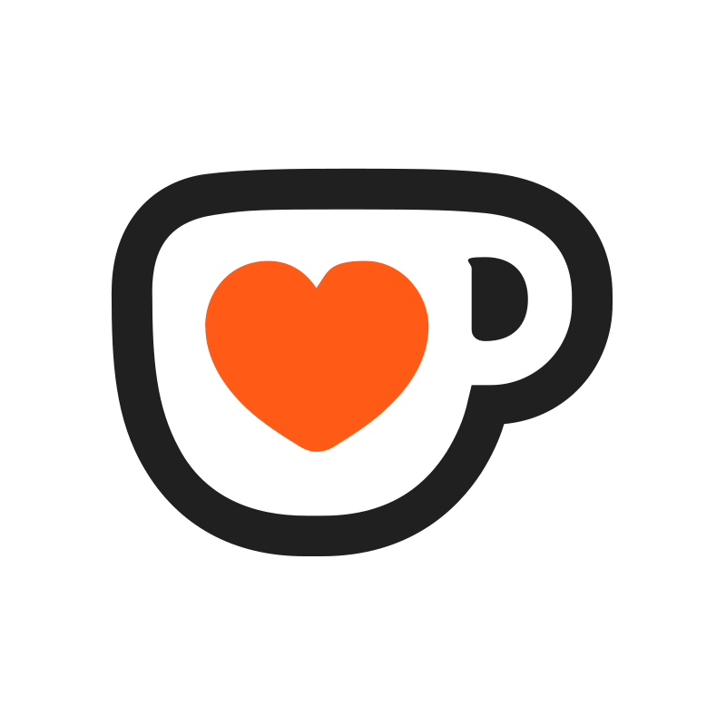

ChatRD - Setup
Config
Streamer.Bot is Offline!
Streamer.bot WebSocket Server
Streamer.bot WebSocket Port
Speaker.Bot is required for Text-to-Speech!
Follow the tutorial
.
Text-to-Speech Chat
Enables TTS for Chat.
Text-to-Speech Events
Enables TTS for Events.
General
Language
Change the chat's events language.
Brazilian Portuguese
English
Spanish
Chat Font Size
Changes ChatRD's font size
100%
Scroll Bar
Adds a scrollbar.
Bigger Emotes
Increases the emotes size from 22px to 32px.
The Chat Field is a
BETA
feature!
Chat Field
Adds a chat field for you to type in your chat.
The Chat Field also accepts
/commands
.
Commands Supported
.
Moderation is a
BETA
feature!
Moderation Actions
Adds buttons when you hover the messages.
Moderation Actions follows the Commands suported.
Read More
.
Background Color
Changes ChatRD's background color
Background Opacity
Changes ChatRD's background color opacity
1
Events Mockup
Will show random fake events when Streamer.bot is
offline
.
Horizontal Direction
Chat/Events will be horizontal.
Platforms
Shows the platforms icons.
Avatars
Timestamps
AM/PM
Badges
Platform Statistics
Shows all platform statistics.
Ignore Commands
Ignores texts starting with "!".
Ignore Chatters
Separate their names by commas. eg.: StreamLabs,StreamElements
Hide Chat Msg
Hides a message after X seconds. (0 disables it)
Twitch
Chat
Reads Twitch chat.
Followers
Bits
Announcements
Subscriptions
Show Subscription events.
Disabling this disables all sub events
.
Gifted Subs
When a user gifts another user a sub.
Gifted Bomb
When a user gifts subs massively.
Gifted Bomb Users Train
Shows all users that were gifted a sub on a Gifted Bomb.
Channel Point Rewards
Raids
Shared Chat
Pronouns
Shows Pronouns to those whom enabled them on Twitch chat.
Statistics
Shows Twitch Viewers.
YouTube
Chat
Reads YouTube chat.
SuperChat
Super Sticker
Show Super Sticker GIF
Full Size Super Sticker
Shows the sticker above the event in full.
Membership
Show Membership events.
Disabling this disables all member events
.
Gifted Membership
Shows the person gifting members.
Gifted Membership Train
Shows all users that were gifted a membership on a massive gifting membership.
Statistics
Shows YouTube Viewers and Likes.
YouTube API doesn't expose Member Emotes.
Read more
.
Members Only Emotes
You have to add member emotes manually.
Really YouTube!?
ü§®
{}
TikTok
Chat
Reads TikTok chat.
Followers
Likes
Show likes in
15
increments. Why?
Blame TikFinity!
ü§£
Gifts
Subscriptions
Statistics
Shows TikTok Viewers and Likes.
Kick
Kick is a
BETA
feature!
Read more
.
Your Kick Username
Your user handle. It's on kick.com/
username
Chat
Reads Kick chat.
Statistics
Show Kick Viewers. Self-updates each 15 seconds.
Kick.Bot
is required for events.
Follow the tutorial
.
Followers
Subscriptions
Show Subscription events.
Disabling this disables all sub events
.
Gifted Subs
When a user gifts another user a sub.
Gifted Bomb
When a user gifts subs massively.
Raids
Donations
You need to connect Streamlabs to Streamer.Bot.
Follow the tutorial
.
You need to connect StreamElements to Streamer.Bot.
Follow the tutorial
.
Streamlabs Tips
StreamElements Tips
Patreon
You need to connect Patreon to Streamer.Bot.
Follow the tutorial
.
Memberships
TipeeeStream
You need to connect TipeeeStream to Streamer.Bot.
Follow the tutorial
.
Donations
 Ko-Fi
You need to connect Ko-Fi to Streamer.Bot.
Follow the tutorial
.
Subscription
Donations
Orders
Fourthwall
You need to connect Fourthwall to Streamer.Bot.
Follow the tutorial
.
Donations
Orders
Subscriptions
Show Order Image
Full Size Order Image
Shows the image above the event in full.
Gift Purchase
Show Gift Image
Full Size Gift Image
Shows the image above the event in full.
Gift Draw
Gift Command
Command used to join the Gift Draw.
Add YouTube Custom Emote
Emote Name
Image URL
Add
Cancel